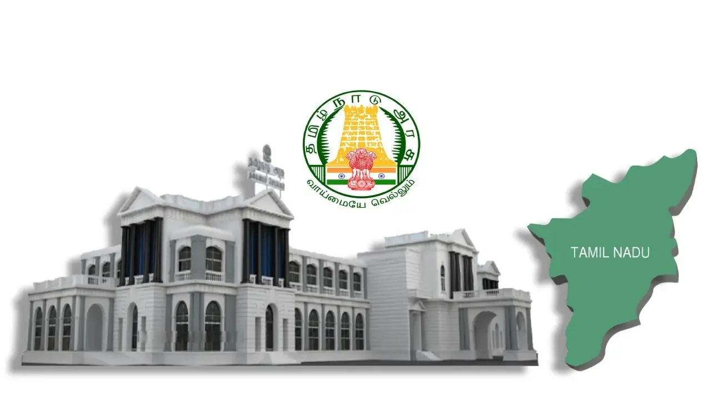

Complaint register
| Name: | |
| Age: | |
| gmail id: | |
| Phone number: | |
| Complaint ward: | |
| Sent images: | |
HEPLS
For the Government services, scheme details, and citizen help, visit the primary Tamil Nadu Government Portal. To file civic complaints or track petitions directly with the Chief Minister's office, use the Mudhalvarin Mugavari Department or download the "TN CM Helpline Citizen" app via Google Play.For specific needs, the TN government provides several specialized portals:Social Welfare: Find assistance schemes for women, children, and seniors at the Tamil Nadu Social Welfare Department.Disabilities Support: Access care services and welfare benefits through TN Rights.Schemes: Check your eligibility for various state initiatives via MyScheme Tamil Nadu.Could you tell me what kind of help you need (e.g., healthcare, employment, housing, or social welfare)? This will help me point you to the exact department or application form.
Contact
For immediate assistance from the Tamil Nadu government, call the centralized CM Helpline at 1100 or email the Chief Minister's Cell directly at cmcell@tn.gov.in.
For other major state departments and general administrative support in Chennai, you can use these primary points of contact:
- Chief Minister's Office (CMO): Email cmo@tn.gov.in or call 044-2567234
- Chief Secretary: Call 044-25671555 or email cs@tn.gov.in
- Chennai District Collectorate: Call 044-25268320 / 25268321 or email collrchn@nic.in
- e-Sevai / e-Governance Helpdesk: Call 18004256000 or email tnesevaihelpdesk@tn.gov.in.
- State Directory: To locate contact details for specific district collectors, ministries, or departments, use the TN Government Contact Directory.